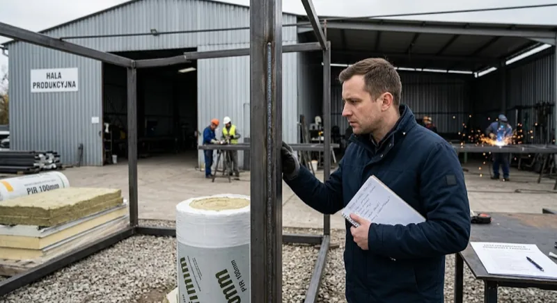

Twój pawilon właśnie przyjechał na naczepie. Chłopaki z ekipy postawili go na bloczki, podłączyli prąd, podają Ci długopis. "Proszę podpisać protokół odbioru."
Stop.
Wiem, że jest stres. Wiem, że chłopaki się śpieszą, bo mają następny transport. Wiem, że chcesz się już cieszyć nowym pawilonem. Ale ten moment — zanim podpiszesz — jest kluczowy. Bo po podpisaniu protokołu reklamacja jest trudniejsza. Dużo trudniejsza.
Masz tu listę rzeczy do sprawdzenia. Punkt po punkcie. Wydrukuj sobie, weź na odbiór. Zajmie Ci to 30-40 minut. Za to uchroni Cię przed miesiącami nerwów.
Zacznij od dachu
Weź drabinę. Serio, weź drabinę. Wejdź na górę i popatrz.
Dach to pierwsze miejsce, gdzie pojawiają się problemy. Jeśli jest źle zrobiony — za rok masz przeciek. A przeciek w pawilonie to nie tylko woda na podłodze. To wilgoć w ścianach, pleśń w izolacji, rdza w konstrukcji.
Spadek. Postaw butelkę wody na dachu. Stoi prosto? Spadek jest za mały. Butelka powinna się przechylać. Minimum 3 stopnie. Na płaskim dachu stoi woda po każdym deszczu. A stojąca woda to przyszły przeciek.
Obróbki blacharskie. Krawędzie dachu, miejsca gdzie dach łączy się ze ścianami. Są porządne obróbki z blachy? Czy ktoś po prostu nawalił silikonu? Silikon po dwóch zimach się odklejał i pęka. Blacha trzyma.
Rynny. Mają spadek do rury spustowej? Wlej trochę wody do rynny. Płynie w stronę odpływu? Czy stoi w miejscu?
Sprawdź spawy
Zejdź na dół. Obejdź pawilon dookoła. Popatrz na spawy konstrukcji — widoczne na spodzie i w miejscach, gdzie łączą się elementy ramy.
Przejedź palcem po spawie. Równy? Gładki? Bez ostrych krawędzi? Dobry spaw jest jak linia narysowana jednym ruchem.
Na co uważać:
- Pory i pęcherze — małe dziurki w spawie. To słabe punkty, które z czasem zaczynają rdzewieć.
- Odpryski — kropelki metalu wokół spawu. Powinny być oczyszczone i zabezpieczone farbą antykorozyjną.
- Rdzawe punkty — na nowym pawilonie? Nie powinno być ani jednego. Jeśli jest rdza na spawie świeżego pawilonu — nie zabezpieczyli go.
- Nierówne linie — spaw, który wygląda jak wężyk, to spaw robiony ręką bez doświadczenia.
Nie musisz być spawaczem, żeby to ocenić. Wystarczy popatrzeć i porównać. Jeden spaw jest równy i gładki, drugi wygląda jak roztopiony metal — różnicę widzisz od razu.
Okna i drzwi — otwórz i zamknij. Trzy razy.
Każde okno. Każde drzwi. Trzy razy otworzyć, trzy razy zamknąć.
Dlaczego trzy razy? Bo za pierwszym razem wszystko wydaje się ok. Za drugim możesz poczuć opór. Za trzecim — usłyszysz zgrzyt albo zobaczysz, że okno nie domyka się do końca.
Na co patrzysz:
- Lekki ruch. Okno powinno chodzić gładko. Bez szarpania, bez użycia siły. Jeśli musisz docisnąć kolanem — jest źle ustawione.
- Uszczelki. Są na miejscu? Nie odchodzą? Przylegają równo do ramy?
- Klamka. Działa we wszystkich pozycjach? Uchył, otwarcie, zamknięcie?
- Szczelność. Zamknij okno, przyłóż dłoń do krawędzi. Czujesz ciąg powietrza? To nieszczelność.
Drzwi wejściowe — tu osobna kontrola. Zamek wielopunktowy? Powinien mieć. Zamek na jeden punkt to zaproszenie dla złodzieja. Próg — aluminiowy czy plastikowy? Aluminiowy jest droższy, ale nie pęka na mrozie i nie przewodzi zimna tak mocno.
Podłoga — poskacz
Serio. Stań na środku pawilonu i poskacz lekko.
Ugina się? Skrzypi? Czujesz, że coś pod spodem gra? To może być źle zamocowana płyta podłogowa albo zbyt cienkie belki w podwoziu.
Teraz zajrzyj pod pawilon. Z latarką. Sprawdź:
- Izolacja od spodu. Jest styropian lub płyta PIR pod podłogą? Czy widzisz gołe OSB? Bez izolacji od dołu zimą ciągnie zimno od ziemi. Stopy marzną, rachunek za ogrzewanie rośnie.
- Zabezpieczenie antykorozyjne. Belki podwozia pomalowane? Ocynkowane? Czy goły metal?
- Bloczki. Pawilon stoi stabilnie? Nie chwieje się? Bloczki pod każdym punktem oparcia?
Podłoga to fundament komfortu. Jeśli jest źle zrobiona — będziesz to czuć każdego dnia.
Ściany — popatrz pod kątem
Stań przy jednej ścianie i popatrz wzdłuż niej. Pod kątem, z bliska.
Ściana jest prosta? Czy "faluje"? Płyty warstwowe powinny leżeć idealnie płasko. Jeśli widzisz nierówności — albo źle zamontowane, albo uszkodzone w transporcie.
Sprawdź łączenia płyt. Są szczelne? Nie ma widocznych szpar? Każda szpara to mostek termiczny — miejsce, przez które ucieka ciepło zimą i wchodzi gorąco latem.
Ściany wewnętrzne — dotknij. Są wilgotne? Na nowym pawilonie nie powinny być. Jeśli są — pytaj dlaczego.
Instalacja elektryczna — włącz wszystko
Każde gniazdko. Każdy wyłącznik. Każdy punkt oświetleniowy.
Weź ze sobą ładowarkę do telefonu. Podłączaj do każdego gniazdka po kolei. Działa? Telefon się ładuje? Dobry znak.
Na co jeszcze patrzeć:
- Rozdzielnia. Otwórz. Popatrz czy jest czysto, czy kable są opisane, czy bezpieczniki są odpowiedniej mocy. Rozdzielnia powinna mieć wyłącznik różnicowoprądowy — to Twoje bezpieczeństwo.
- Wyłączniki. Klikają pewnie? Nie luźne?
- Oświetlenie. Wszystkie LED-y świecą? Równomiernie? Żaden nie mruga?
- Gniazda. Osadzone pewnie w ścianie? Nie ruszają się jak wepchniesz wtyczkę?
Nie podpisuj protokołu z usterkami. Każdy problem zapisz na liście, zrób zdjęcie i pokaż ekipie. Niech naprawią przed Twoim podpisem. Albo niech wpiszą to do protokołu jako usterki do usunięcia — z terminem.
Zrób zdjęcia. Wszystkiego.
To trwa 10 minut. A może Ci oszczędzić tygodnie kłótni.
Zrób zdjęcia:
- Dachu z góry (cały + detale obróbek)
- Każdej ściany zewnętrznej
- Spawów — z bliska
- Każdego okna — otwartego i zamkniętego
- Drzwi — zamka, progu, zawiasów
- Podłogi — z góry i od spodu
- Rozdzielnicy — otwartej
- Tabliczki znamionowej (jeśli jest)
- Każdego detalu, który budzi Twoje wątpliwości
Te zdjęcia to Twój dowód. Jeśli za miesiąc pojawi się problem — masz dokumentację z dnia odbioru. Bez zdjęć producent może powiedzieć "to uszkodzenie mechaniczne, pan sam zrobił". Ze zdjęciami — nie ma tej rozmowy.
Nie podpisuj pod presją
Wiem, jak to wygląda. Chłopaki z ekipy transportowej stoją, patrzą na zegarek. "Mamy jeszcze jeden transport dzisiaj." "Proszę podpisać, bo musimy jechać."
Rozumiem. Ale to Ty płacisz. To Twoje pieniądze. To Twój pawilon na następne 20 lat.
Ekipa dostanie swoje pieniądze niezależnie od tego, czy podpiszesz za 5 minut czy za godzinę. A Ty z podpisanym protokołem bez uwag — tracisz prawo do łatwej reklamacji.
Nie musisz podpisywać od razu. Masz prawo poprosić o czas na sprawdzenie. Masz prawo wpisać uwagi do protokołu. Masz prawo odmówić podpisu, jeśli widzisz poważne wady.
Dobry producent to szanuje. Zły — będzie naciskał. I to samo w sobie mówi Ci wystarczająco dużo.
1. Dach — spadek, obróbki, rynny
2. Spawy — równe, bez porów, bez rdzy
3. Okna — 3x otworzyć/zamknąć, uszczelki, szczelność
4. Drzwi — zamek wielopunktowy, próg, zawiasy
5. Podłoga — ugięcie, skrzypienie, izolacja od spodu
6. Ściany — prostość, łączenia płyt, brak wilgoci
7. Elektryka — gniazdka, wyłączniki, LED, rozdzielnia
8. Zdjęcia — wszystko, z bliska
9. Protokół — uwagi wpisane, termin napraw ustalony
Masz pytanie o odbiór? Chcesz wiedzieć co sprawdzamy my, zanim wydamy pawilon klientowi?
Zadzwoń: 509 508 210Jedna rada na koniec
Zabierz ze sobą kogoś. Drugą parę oczu. Kolegę, który trochę się zna na budowlance. Albo po prostu kogoś, kto jest spokojny i nie da się ponaglić.
Sam — jesteś podekscytowany, chcesz się cieszyć, łatwo przeoczyć. We dwóch — jeden patrzy na spawy, drugi sprawdza okna. A jak ktoś mówi "proszę podpisać, bo śpieszymy się" — łatwiej odpowiedzieć "chwilę, jeszcze sprawdzamy".
30 minut sprawdzania. 20 lat spokoju. Warto.